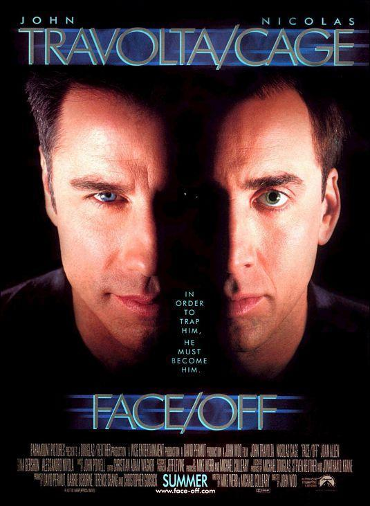
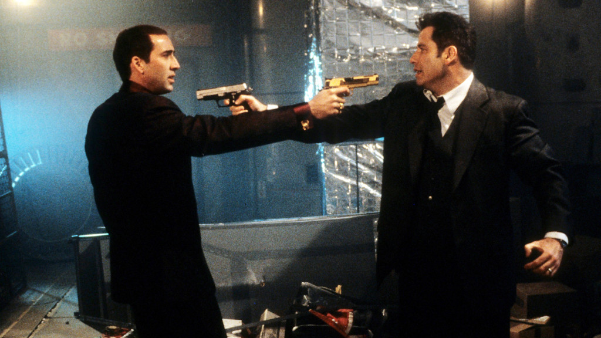
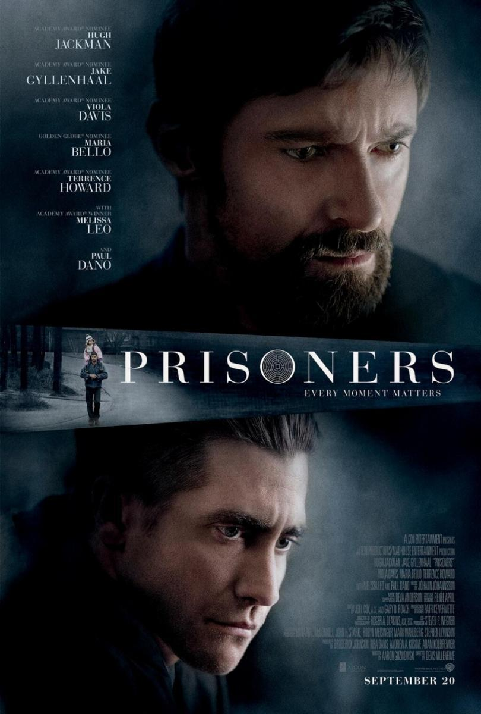
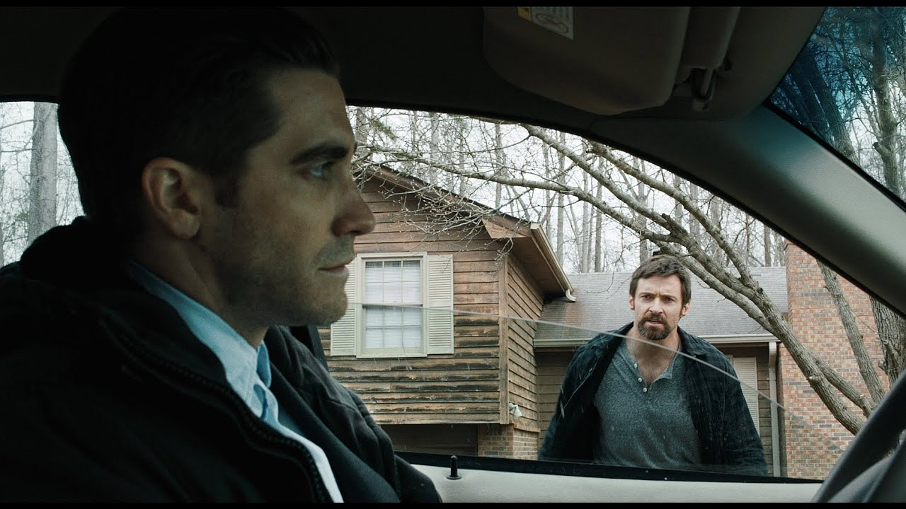

Baby Driver:
Baby Driver es una película de acción de 2017 escrita y dirigida por Edgar Wright. Está protagonizada por Ansel Elgort, Kevin Spacey, Lily James, Eiza González, Jon Hamm, Jamie Foxx y Jon Bernthal
Sinopsis:
Para saldar su deuda con un mafioso, un joven con problemas de audición hace de conductor en atracos. Cuando por fin cree que se ha librado de su compromiso y pretende rehacer su vida, se ve obligado a retornar para un último golpe.
Trailer de la Película:
Imagenes de la Película:

Face/Off:
Face/Off (o contracara en Hispanoamérica)es una película de acción y ciencia ficción dirigida por John Woo de 1997 y protagonizada por John Travolta y Nicolas Cage.
Sinopsis:
Un peligroso terrorista a punto de morir y un agente especial del FBI ingresan en un quirófano para un trasplante de cara. Se trata de que el policía pueda infiltrarse en la banda para encontrar un arma biológica que el terrorista ha colocado en algún lugar de Los Ángeles. Pero el terrorista sale del coma y se escapa.
Trailer de la Película:
Imagenes de la Película:
 
Prisoners (La Sospecha):
Prisoners (titulada La sospecha o Intriga en Hispanoamérica) es una película estadounidense de 2013 dirigida por Denis Villeneuve. Está protagonizada por Hugh Jackman, Jake Gyllenhaal, Viola Davis, Maria Bello, Terrence Howard, Melissa Leo y Paul Dano.
Sinopsis:
Keller Dover se enfrenta a la peor pesadilla para un padre: la desaparición de su hija de seis años junto a una amiga. Pese a ello, Keller todavía tiene una pista de la que puede tirar: una autocaravana que se encontraba aparcada en su calle.
Trailer de la Película:
Imagenes de la Película:
 